감정평가사-1차-1교시(구) (2013-06-29 기출문제)
1과목: 민법(총칙,물권)
1. 신의성실의 원칙에 관한 설명으로 옳지 않은 것은? (다툼이 있으면 판례에 의함)
- 당사자의 주장이 없으면 법원은 직권으로 신의칙의 위반 여부를 판단할 수 없다.
- 특정채무를 보증한 경우 채권자의 권리행사가 신의칙에 비추어 용납할 수 없는 때에는 극히 예외적으로 보증인의 책임을 제한할 수 있다.
- 신의칙은 사법(私法) 전반에 적용되는 일반원칙이다.
- 신의칙은 법률행위해석의 기준이 된다.
- 부동산거래에서 거래 상대방이 일정한 사정에 관한 고지를 받았더라면 그 거래를 하지 않았을 것이 경험칙상 명백한 경우 그 사정을 고지할 신의칙상 의무가 인정된다.
(정답률: 알수없음)

2. 실종선고와 그 취소에 관한 설명으로 옳은 것은? (다툼이 있으면 판례에 의함)
- 실종선고 또는 인정사망이 있는 경우 사망한 것으로 본다.
- 실종선고의 취소는 실종기간 경과 후 취소 전에 선의로 한 행위의 효력에 영향을 미치지 않는다.
- 실종선고를 받은 자가 생환한 경우 그 실종선고는 효력을 잃는다.
- 실종선고가 취소되면 실종선고를 원인으로 재산을 취득한 자는 받은 이익의 전부를 반환하여야 한다.
- 동일인에 대하여 2차례의 실종선고가 있는 경우 첫번째 실종선고를 기준으로 상속관계를 판단한다.
(정답률: 알수없음)
3. 미성년자의 행위능력에 관한 설명으로 옳지 않은 것은? (다툼이 있으면 판례에 의함)
- 미성년자에게 영업을 허락한 법정대리인은 미성년자의 동의가 없더라도 그 영업허락을 제한할 수 있다.
- 법정대리인이 영업허락을 취소했으나 그 사실을 모르는 제3자가 미성년자와 체결한 영업상의 계약은 유효하다.
- 의사능력 있는 미성년자가 타인으로부터 대리권을 수여받아 부모의 동의 없이 대리행위를 한 경우 무능력을 이유로 그 대리행위를 취소할 수 없다.
- 미성년자가 사술(詐術)로 자기를 성년자로 믿게 했더라도 미성년을 이유로 그 행위를 취소할 수 있다.
- 미성년자의 법률행위에 법정대리인의 동의가 있었는지에 대한 증명책임은 동의 있음을 주장하는 상대방에게 있다.
(정답률: 알수없음)
4. 법인에 관한 설명으로 옳지 않은 것은? (다툼이 있으면 판례에 의함)
- 법인 대표자의 행위가 직무에 해당하지 않음을 그 행위 당시 알았던 피해자는 법인의 불법행위책임을 물을 수 없다.
- 사단법인의 정관에 정관변경을 금지하는 규정이 있더라도 사원총회의 결의로 그 규정을 변경할 수 있다.
- 이사가 여럿인 경우 정관에 다른 규정이 없으면 이사의 과반수로서 법인을 대표하여야 한다.
- 각 사원은 원칙적으로 평등한 결의권을 갖지만, 정관으로 달리 정할 수 있다.
- 재단법인이 정관에 정한 방법으로 정관을 변경하더라도 주무관청의 허가가 없으면 그 효력이 없다.
(정답률: 알수없음)
5. 법인 아닌 사단에 관한 설명으로 옳지 않은 것은? (다툼이 있으면 판례에 의함)
- 교회의 대표자가 권한 없이 교회재산을 처분한 경우 권한을 넘은 표현대리에 관한 민법 제126조의 규정이 유추적용된다.
- 어떤 임야가 임야조사령에 의하여 동(洞)ㆍ리(里)의 명의로 사정(査定)된 경우 특별한 사정이 없는 한 그 동ㆍ리는 법인 아닌 사단이다.
- 종중은 자연발생적 단체로서 특별한 조직행위가 없더라도 법인 아닌 사단이 될 수 있다.
- 법인 아닌 사단이 당사자인 사건에서 대표자에게 적법한 대표권이 있는지의 여부는 법원의 직권조사사항이다.
- 법인 아닌 사단에는 사단법인에 관한 민법규정 중 법인격을 전제로 하지 않는 규정이 유추적용된다.
(정답률: 알수없음)
6. 물건에 관한 설명으로 옳지 않은 것은? (다툼이 있으면 판례에 의함)
- 1동의 건물의 일부도 독립성이 인정되면 하나의 부동산이 될 수 있다.
- 부동산의 일부를 전세권의 객체로 할 수 있다.
- 입목에 관한 법률에 의해 등기한 수목의 집단은 저당권의 객체가 될 수 없다.
- 독립된 부동산으로서의 건물이라고 하기 위하여는 최소한의 기둥과 지붕 그리고 주벽(主壁)을 갖추어야 한다.
- 타인의 토지 위에 권원없이 경작한 농작물이 성숙하였다면 그 소유권은 경작자에게 귀속된다.
(정답률: 알수없음)
7. 주물ㆍ종물에 관한 설명으로 옳은 것은? (다툼이 있으면 판례에 의함)
- 어떤 물건이 주물의 소유자나 이용자의 상용에 공여되고 있다면 주물의 효용과 직접 관계없어도 종물이다.
- 주유소의 지하에 매설된 유류저장탱크는 주유소의 종물이다.
- 종물은 주물의 처분에 따라야 하므로 종물만의 처분을 당사자가 임의로 정할 수는 없다.
- 건물에 대한 저당권의 효력은 그 건물소유를 목적으로 하는 지상권에도 미친다.
- 법률의 규정 또는 다른 약정이 없으면 주물에 설정된 저당권은 저당권설정 이후의 종물에 그 효력이 미치지 않는다.
(정답률: 알수없음)
8. 의사표시의 효력발생에 관한 설명으로 옳지 않은 것은? (다툼이 있으면 판례에 의함)
- 보통우편으로 발송된 우편물은 상당기간 내에 도달한 것으로 추정된다.
- 격지자간의 계약은 승낙의 통지를 발송한 때에 성립한다.
- 표의자가 의사표시를 발송한 후 사망하더라도 그 효력에 영향이 없다.
- 의사표시가 도달된 후에는 표의자의 상대방이 이를 요지(了知)하기 전이라도 표의자는 이를 철회하지 못한다.
- 의사표시의 효력발생을 위해 표의자의 상대방이 그 의사표시의 내용을 알 것까지 요구되지는 않는다.
(정답률: 알수없음)
9. 법률행위의 무효와 취소에 관한 설명으로 옳지 않은 것은? (다툼이 있으면 판례에 의함)
- 토지거래허가를 배제하거나 잠탈하는 내용의 토지매매계약은 확정적으로 무효이다.
- 무효인 법률행위에 의한 법률효과를 침해하는 것처럼 보이는 위법행위가 있더라도 그 법률효과의 침해에 따른 손해가 인정되지 않는다.
- 무효인 재산상 법률행위를 당사자가 무효임을 알고 추인한 경우 제3자에 대한 관계에서도 처음부터 유효한 법률행위가 된다.
- 무능력을 이유로 법률행위가 취소된 경우 악의의 무능력자도 그 행위로 인하여 받은 이익이 현존하는 한도에서 반환할 책임이 있다.
- 강박에 의한 의사표시가 적법하게 취소된 후에 그 의사표시를 추인하는 경우 그 취소원인이 소멸한 후에 하여야만 추인의 효력이 있다.
(정답률: 알수없음)
10. 사회질서에 반하는 법률행위에 관한 설명으로 옳지 않은 것은? (다툼이 있으면 판례에 의함)
- 부첩(夫妾)관계의 종료를 해제조건으로 하는 증여계약은 사회질서에 반하여 무효이다.
- 어떠한 일이 있어도 이혼하지 않겠다는 각서를 써 주었더라도 그와 같은 의사표시는 공서양속에 위반되어 무효이다.
- 법률행위가 사회질서에 위반되었는지의 여부는 법률행위의 효력발생시점을 기준으로 판단해야 한다.
- 강제집행을 면할 목적으로 허위의 근저당권설정등기를 하는 행위는 사회질서에 반하는 것으로 볼 수 없다.
- 소송에서 증언하는 대가로 통상적으로 용인될 수 있는 수준을 넘는 급부를 제공하기로 하는 약정은 사회질서에 반하는 것으로 무효이다.
(정답률: 알수없음)
11. 불공정한 법률행위에 관한 설명으로 옳지 않은 것은? (다툼이 있으면 판례에 의함)
- 경매에 의한 재산권의 이전에는 불공정한 법률행위의 법리가 적용되지 않는다.
- 대가관계 없이 당사자 일방이 상대방에게 일방적인 급부를 하는 법률행위도 불공정한 법률행위로 무효가 될 수 있다.
- 대리행위의 경우 경솔과 무경험은 대리인을 기준으로 판단하지만, 궁박은 본인을 기준으로 판단한다.
- 궁박은 경제적인 것에 한정되지 않으며, 정신적 또는 신체적 원인에 기인하는 것도 포함한다.
- 불공정한 법률행위가 성립되기 위한 요건은 무효를 주장하는 자가 증명해야 한다.
(정답률: 알수없음)
12. 착오에 관한 설명으로 옳지 않은 것은? (다툼이 있으면 판례에 의함)
- 착오가 표의자의 중대한 과실로 인한 때에는 착오를 이유로 취소할 수 없다.
- 소취하 등 소송행위에도 민법상 사기 또는 착오로 인한 취소규정이 적용된다.
- 계약당사자 쌍방이 계약의 기초가 되는 사항에 관하여 같은 내용으로 착오하여 그 사항에 관하여 약정하지 않은 경우 그 착오가 없었다면 약정하였을 내용으로 당사자의 의사를 보충할 수 있다.
- 착오를 이유로 취소한 자는 이로 인하여 상대방에게 손해가 발생했더라도 불법행위책임을 부담하지 않는다.
- 장래 도시계획이 변경되어 호텔의 신축허가를 받을 수 있을 것이라고 스스로 생각하여 토지의 매매계약을 체결했으나 그 후 예상대로 되지 않은 경우 착오를 이유로 취소할 수 없다.
(정답률: 알수없음)
13. 복대리에 관한 설명으로 옳지 않은 것은?
- 법정대리인은 자신의 책임으로 복대리인을 선임할 수 있다.
- 복대리인은 임의대리인이다.
- 복대리인의 대리행위가 대리인의 대리권의 범위를 넘은 경우 본인이 이를 추인할 수 있다.
- 복대리인은 제3자에 대하여 대리인과 동일한 권리의무가 있다.
- 복대리인은 본인에게 직접 비용상환을 청구할 수 없다.
(정답률: 알수없음)
14. 乙이 대리권 없이 甲의 대리인으로 甲 소유의 토지를 丙에게 임대한 경우에 관한 설명으로 옳지 않은 것은? (다툼이 있으면 판례에 의함)
- 甲이 계약을 추인한 경우 다른 의사표시가 없으면 그 계약은 처음부터 유효하나, 제3자의 권리를 해치지 못한다.
- 乙이 이행책임 또는 손해배상책임을 져야 하는 경우 어느 책임을 부담할 것인지는 원칙적으로 丙이 선택한다.
- 甲이 사망하고 乙이 유일한 상속인인 경우 乙은 이 계약의 추인을 거절하지 못한다.
- 丙이 상당한 기간을 정해 추인 여부를 최고한 경우 甲이 그 기간 내에 확답을 발송하지 않으면 추인을 거절한 것으로 본다.
- 丙이 선의인 경우 그는 甲이 계약을 추인한 후에도 그 계약을 철회할 수 있다.
(정답률: 알수없음)
15. 표현대리에 관한 설명으로 옳지 않은 것은? (다툼이 있으면 판례에 의함)
- 표현대리가 성립하는 경우에는 상대방에게 설령 과실이 있더라도 과실상계의 법리를 유추적용할 수 없다.
- 등기신청을 위한 대리권을 가진 대리인이 그 권한을 넘어 대물변제를 한 경우 표현대리의 법리는 적용되지 않는다.
- 표현대리가 성립한다고 하여 무권대리의 성질이 유권대리로 전환되는 것은 아니다.
- 호텔 등의 시설이용 우대회원 모집계약을 체결하면서 자신의 판매점이나 총대리점 등의 명칭을 사용하여 회원모집 안내를 하는 것을 승낙 또는 묵인하였다면 대리권 수여의 표시가 있은 것으로 볼 수 있다.
- 대리권 소멸후의 표현대리가 인정되는 경우 그 권한을 넘는 대리행위가 있을 때에는 권한을 넘은 표현대리가 성립할 수 있다.
(정답률: 알수없음)
16. 조건에 관한 설명으로 옳지 않은 것은? (다툼이 있으면 판례에 의함)
- 조건이 불능인 법률행위는 그 조건이 정지조건이면 무효이고, 해제조건이면 조건 없는 법률행위로 된다.
- 해제조건이 법률행위 당시 기성조건이면 그 법률행위는 무효이다.
- 조건을 붙일 수 없는 법률행위에 조건을 붙인 경우 그 법률행위는 전부무효임이 원칙이다.
- 불법조건이 붙은 법률행위는 정지조건이면 무효이고, 해제조건이면 조건 없는 행위로서 유효하다.
- 소유권유보부 매매의 경우 대금이 모두 지급되면 별도의 의사표시가 없더라도 목적물의 소유권이 매수인에게 이전된다.
(정답률: 알수없음)
17. 기한에 관한 설명으로 옳지 않은 것은? (다툼이 있으면 판례에 의함)
- 정지조건부 기한이익의 상실특약이 있는 경우 그 특약사유가 발생하더라도 채권자의 의사표시가 있어야 채무자는 기한의 이익을 상실한다.
- 파산선고를 받은 채무자는 기한의 이익을 주장하지 못한다.
- 채권자는 변제기까지의 이자를 포기하고 채무자에게 기한 전에 변제할 것을 청구할 수 없다.
- 종기있는 법률행위는 기한이 도래한 때로부터 그 효력을 잃는다.
- 당사자가 불확정한 사실이 발생한 때를 이행기한으로 정한 경우 그 사실의 발생이 불가능하게 된 때에도 이행기한이 도래한 것으로 보아야 한다.
(정답률: 알수없음)
18. 소멸시효에 관한 설명으로 옳지 않은 것은? (다툼이 있으면 판례에 의함)
- 소멸시효의 기간은 법률행위로 단축할 수 있다.
- 매달 지급해야 하는 집합건물의 관리비채권의 소멸시효기간은 10년이다.
- 환매권의 행사로 발생한 소유권이전등기청구권의 소멸시효기간은 10년이다.
- 공유물분할청구권은 그 기초가 되는 법률관계가 존속하는 동안 시효로 소멸하지 않는다.
- 근저당설정약정에 의한 근저당권설정등기청구권은 피담보채권과 별도로 소멸시효가 진행한다.
(정답률: 알수없음)
19. 소멸시효의 중단에 관한 설명으로 옳지 않은 것은? (다툼이 있으면 판례에 의함)
- 시효기간만료 전에 응소함으로써 시효가 중단되는 경우 소멸시효기간이 만료된 후라도 사실심 변론종결 전에는 언제든지 시효중단을 주장할 수 있다.
- 시효중단의 효력은 당사자 및 그 승계인 사이에서만 효력이 있다.
- 시효중단의 효력 있는 승인에는 상대방의 권리에 관한 처분의 능력이나 권한 있음을 요한다.
- 사망한 사람을 피신청인으로 한 가압류결정은 상속인에 대하여 시효중단의 효력이 없다.
- 가처분은 시효의 이익을 받은 자에 대하여 하지 아니한 때에는 이를 그에게 통지한 후가 아니면 시효중단의 효력이 없다.
(정답률: 알수없음)
20. 물권적 청구권에 관한 설명으로 옳은 것은? (다툼이 있으면 판례에 의함)
- 점유물반환청구권은 점유를 침탈당한 날로부터 1년 내에 행사하여야 한다.
- 양자간 등기명의신탁에서 명의수탁자가 신탁부동산을 처분하여 제3취득자가 유효하게 소유권을 취득하였는데, 그 후 명의수탁자가 우연히 신탁부동산의 소유권을 다시 취득하였다면 명의신탁자의 소유권에 기한 물권적 청구권이 인정된다.
- 제3자가 저당권설정자인 소유자의 의사에 반하여 저당권이 설정된 건물의 점유를 침탈한 경우 저당권자는 자신에게 건물의 반환을 청구할 수 있다.
- 토지소유자는 그의 토지 위에 무단으로 건축된 건물을 임차하여 점유하고 있는 자를 상대로 건물철거를 청구할 수 있다.
- 유효하게 부동산을 명의신탁한 자는 자신이 직접 제3자에게 물권적 청구권을 행사하여 신탁재산에 대한 침해배제를 구할 수 있다.
(정답률: 알수없음)
21. 주위토지통행권에 관한 설명으로 옳지 않은 것은? (다툼이 있으면 판례에 의함)
- 이미 그 소유 토지의 용도에 필요한 통로가 있는 경우에는 그 통로를 사용하는 것보다 더 편리하다는 이유만으로 다른 장소로 통행할 권리를 인정할 수는 없다.
- 당초에 적법하게 설치된 담장은 주위토지통행권에 기한 통행에 방해가 되더라도 철거할 수 없다.
- 분할로 인하여 공로에 통하지 못하는 토지가 생긴 경우 그 포위된 토지의 특정승계인에게는 무상의 주위토지통행권이 인정되지 않는다.
- 토지소유자 자신이 그 토지와 공로사이의 통로를 막는 건물을 축조한 경우 타인소유의 주위토지를 통행할 권리가 없다.
- 통행권자의 허락을 얻어 사실상 통행하고 있는 자에 대하여 주위토지의 소유자는 통행에 따른 손해의 보상을 청구할 수 없다.
(정답률: 알수없음)
22. 등기의 추정력에 관한 설명으로 옳지 않은 것은? (다툼이 있으면 판례에 의함)
- 소유권에 관한 등기에는 권리의 추정력이 있으므로 이를 다투는 측에서 그 무효사유를 주장ㆍ증명하여야 한다.
- 등기절차가 적법하게 진행되지 아니한 것으로 볼만한 의심스러운 사정이 증명된 경우에는 등기의 추정력이 깨어진다.
- 매매를 원인으로 하는 소유권이전등기가 경료된 경우 등기 기재와 같이 매매에 의하여 등기명의인이 소유권을 취득한 것으로 추정된다.
- 권리취득의 원인을 등기부에 기재된 취득원인과 달리 주장하는 경우 그 주장만으로는 등기의 추정력이 깨어지지 않는다.
- 부동산의 등기명의자는 자신의 소유권이전등기가 유래한 전 소유자에 대하여 등기의 추정력을 주장할 수 없다.
(정답률: 알수없음)
23. 미등기 부동산에 관한 법률관계에 대한 설명으로 옳지 않은 것은? (다툼이 있으면 판례에 의함)
- 소유자 甲으로부터 미등기 건물을 매수한 乙이 소유권이전등기를 마치지 않은 상태에서 이를 다시 丙에게 전매하여 인도한 경우 甲은 丙에게 소유물반환을 청구할 수 없다.
- 미등기 무허가건물을 매수하였으나 소유권이전등기를 마치지 않은 매수인은 그 건물의 불법점유자에 대하여 소유물반환을 청구할 수 없다.
- 미등기 건물에 대한 양도담보계약상의 채권자의 지위를 승계하여 건물을 관리하고 있는 자는 건물에 대한 철거처분권을 갖지 못한다.
- 미등기 건물을 그 대지와 함께 매수한 사람이 그 대지에 관하여만 소유권이전등기를 넘겨받아 저당권을 설정한 후 그 저당권의 실행으로 대지가 경매되어 다른 사람의 소유로 된 경우 그 건물을 위한 법정지상권이 성립한다.
- 미등기 부동산의 매수인이 그 부동산을 인도받은 경우 매도인의 상속인이 행사하는 반환청구에 대하여 반환을 거절할 수 있다.
(정답률: 알수없음)
24. 청구권 보전의 가등기에 관한 설명으로 옳지 않은 것은? (다툼이 있으면 판례에 의함)
- 본등기의 순위는 가등기의 순위에 따르나 물권변동의 시기가 가등기를 경료한 때로 소급하지 않는다.
- 소유권이전등기청구권 보전을 위한 가등기가 있다 하여 소유권이전등기를 청구할 어떤 법률관계가 있다고 추정되지 않는다.
- 소유권이전등기청구권의 보전을 위한 가등기에 기한 본등기가 경료되면 그 사이에 행해진 중간처분의 등기는 가등기에 의하여 순위가 보전된 권리와 양립할 수 없는 범위 내에서 무효로 된다.
- 매수인 명의의 가등기가 이루어진 후에 매도인이 제3자 앞으로 소유권이전등기를 경료해 준 경우 매수인은 매도인을 상대로 본등기를 청구하여야 한다.
- 부동산 강제경매절차에서 부동산이 매각된 경우 특단의 사정이 없으면 소유권이전등기청구권의 보전을 위한 가등기는 말소된다.
(정답률: 알수없음)
25. 선의취득에 관한 설명으로 옳지 않은 것은? (다툼이 있으면 판례에 의함)
- 등기ㆍ등록으로 공시되는 자동차, 선박의 선의취득은 인정되지 않는다.
- 점유개정에 의한 선의취득은 부정되지만 목적물반환청구권의 양도에 의한 선의취득은 가능하다.
- 점유보조자가 횡령한 물건은 민법상 도품에 해당하지 않는다.
- 선의취득을 위해서는 양수인의 점유취득이 선의ㆍ무과실로 이루어져야 하는데, 선의ㆍ무과실의 기준시점은 물권적 합의와 인도 중에서 어느 것이라도 먼저 갖추어진 때이다.
- 선의취득의 요건을 갖춘 경우 양수인은 선의취득의 효과를 부정하고 임의로 종전소유자에게 동산을 받아갈 것을 요구할 수 없다.
(정답률: 알수없음)
26. 부동산의 소유권취득에 관한 설명으로 옳지 않은 것은? (다툼이 있으면 판례에 의함)
- 자기의 비용과 노력으로 건물을 신축한 자는 원칙적으로 그 건물의 소유권을 원시취득한다.
- 건물신축공사의 수급인이 자기의 노력과 재료를 들여 건물을 완성하더라도 건물의 소유권을 도급인에게 귀속시키기로 하는 합의가 있는 경우 도급인이 그 건물의 소유권을 원시취득한다.
- 채무의 담보를 위하여 채무자가 자기 비용과 노력으로 신축하는 건물의 건축허가 명의를 채권자 명의로 하기로 합의한 경우 그 건물의 소유권은 채권자가 원시취득한다.
- 건축공사가 중단되어 건물의 요건을 갖추지 못한 미완성의 건물을 인도받아 자기의 비용과 노력으로 완공한 수급인은 특별한 사정이 없으면 그 건물을 원시취득한다.
- 매매를 원인으로 소유권이전등기절차를 이행하라는 판결이 있더라도 그 등기가 된 때에 비로소 소유권이전의 효력이 생긴다.
(정답률: 알수없음)
27. 등기부시효취득에 관한 설명으로 옳지 않은 것은? (다툼이 있으면 판례에 의함)
- 무효인 이중보존등기에 기초해서는 등기부취득시효가 완성되지 않는다.
- 등기부시효취득에 있어서 무과실은 점유에 관한 것이고 등기에 관한 것이 아니다.
- 등기부시효취득에 있어서 과실 여부의 증명책임은 시효취득을 부인하는 소유자에게 있다.
- 지적공부 소관청의 분필절차를 거치지 않은 채 등기부상만으로 분할된 토지에 대한 등기부취득시효는 인정되지 않는다.
- 점유의 승계는 물론 등기의 승계도 인정한다.
(정답률: 알수없음)
28. 부동산 점유취득시효에 기한 소유권취득 요건이 아닌 것은?
- 일정 기간 이상의 점유
- 무과실의 점유
- 자주점유
- 등기
- 평온한 점유
(정답률: 알수없음)
29. 점유에 관한 설명으로 옳지 않은 것은? (다툼이 있으면 판례에 의함)
- 피상속인의 사망을 알지 못한 상속인은 피상속인의 점유를 승계하지 못한다.
- 점유자는 과실 없이 점유하는 것으로 추정되지 않는다.
- 점유물반환청구에 대하여 점유침탈자는 점유물에 대한 본권이 있다는 이유로 반환을 거부할 수 없다.
- 점유자가 상대방의 사기로 물건을 인도한 경우에는 점유물반환청구를 할 수 없다.
- 직접점유가 침탈된 경우 직접점유자가 반환받을 수 없는 때에는 간접점유자는 자기에게 반환할 것을 청구할 수 있다.
(정답률: 알수없음)
30. 제한물권이 아닌 것은?
- 점유권
- 유치권
- 질권
- 지역권
- 분묘기지권
(정답률: 알수없음)
31. 지상권에 관한 설명으로 옳지 않은 것은? (다툼이 있으면 판례에 의함)
- 지료는 지상권의 성립요소가 아니다.
- 토지에 저당권을 취득한 자가 그 토지 위에 차후 용익권이 설정되어 담보가치가 떨어지는 것을 막기 위하여 자신의 명의로 지상권을 설정한 경우 저당권의 피담보채권이 변제로 소멸하면 지상권도 소멸한다.
- 지상권자가 건물을 축조한 뒤 지상권을 유보한 채 건물만을 양도할 수도 있고 건물 소유권을 유보한 채 지상권만을 양도할 수도 있다.
- 기존 건물을 소유하기 위해 지상권을 설정받은 경우 지상권의 최단존속기간에 관한 민법규정이 적용된다.
- 존속기간을 영구(永久)로 약정한 지상권도 유효하다.
(정답률: 알수없음)
32. 관습법상의 법정지상권에 관한 설명으로 옳지 않은 것은? (다툼이 있으면 판례에 의함)
- 토지의 매수인이 소유권이전등기를 하기 전에 토지소유자의 승낙을 받아 건물을 신축했으나 매매계약이 해제된 경우 관습법상의 법정지상권이 성립하지 않는다.
- 관습법상 법정지상권을 미리 포기하기로 하는 약정은 효력이 있다.
- 토지공유자의 한 사람이 과반수 지분을 갖는 일부 공유자만의 동의를 얻어 건물을 신축한 후 이를 타인에게 양도한 경우 관습법상의 법정지상권이 성립하지 않는다.
- 토지 소유자가 담보의 목적으로 채권자에게 그 토지위에 가등기를 마친 뒤 건물을 신축하였고 그 후 채권자가 가등기에 기한 본등기를 한 경우 특별한 사정이 없으면 관습법상 법정지상권이 성립한다.
- 토지를 제3자에게 매도하고 토지소유권이전등기를 하기 전에 매도인이 건물을 신축하고 그 후에 토지소유권이전등기를 한 경우 특별한 사정이 없으면 관습법상 법정지상권이 성립하지 않는다.
(정답률: 알수없음)
33. 지역권에 관한 설명으로 옳은 것은? (다툼이 있으면 판례에 의함)
- 하나의 승역지에 순차로 여러 개의 용수지역권이 설정된 경우 지역권 상호간에는 우열이 없다.
- 요역지 공유자의 1인에 대해 지역권의 소멸시효 정지사유가 있어도 다른 공유자의 지역권의 소멸시효가 정지되지는 않는다.
- 일정한 장소를 오랜 시일 통행한 사실이 있다면 통로의 개설이 없더라도 지역권을 시효취득할 수 있다.
- 요역지를 제3자가 시효취득하면 제3자는 그 토지를 위한 지역권도 취득한다.
- 요역지는 1필의 토지일 필요는 없으나 승역지는 1필의 토지이어야 한다.
(정답률: 알수없음)
34. 전세권에 관한 설명으로 옳지 않은 것은? (다툼이 있으면 판례에 의함)
- 건물 일부의 전세권자는 나머지 건물 부분에 대한 경매신청권이 없다.
- 토지전세권의 경우 전세권의 법정갱신이 인정된다.
- 토지전세권의 존속기간이 만료한 경우 전세권의 용익물권적 권능은 전세권설정등기의 말소 없이도 당연히 소멸한다.
- 전세권설정자가 제3자에게 전세 목적 부동산을 양도한 경우 그는 원칙적으로 전세금반환의무를 면한다.
- 전세권자가 장차 전세권이 소멸하여 전세금 반환채권이 발생하는 것을 조건으로 그 장래의 조건부 채권을 제3자에게 양도한 경우 그 양도는 유효하다.
(정답률: 알수없음)
35. 물상보증에 관한 설명으로 옳지 않은 것은? (다툼이 있으면 판례에 의함)
- 채무자의 채무를 변제한 물상보증인은 변제자대위에 의하여 채권자의 권리를 행사할 수 있다.
- 물상보증인이 제공한 담보부동산의 제3취득자가 피담보채무의 이행을 인수하더라도 저당권이 실행되면 물상보증인만이 채무자에게 구상권을 행사할 수 있다.
- 물상보증인의 채무자에 대한 구상권에는 민법상 일반채권의 소멸시효가 적용된다.
- 근저당권을 설정한 물상보증인은 채권최고액을 변제하여 근저당권설정등기의 말소를 청구할 수 있다.
- 채권자가 물상보증인이 제공한 담보목적물에 대하여 근저당권 실행 경매를 신청한 경우 채무자에게 경매개시결정이 송달되지 않더라도 피담보채권의 소멸시효가 중단된다.
(정답률: 알수없음)
36. 유치권에 관한 설명으로 옳은 것은? (다툼이 있으면 판례에 의함)
- 당사자의 합의로 유치권을 설정할 수 있다.
- 점유를 침탈당한 유치권자가 점유회수의 소를 제기하여 승소판결을 받았더라도 점유를 회복하지 않으면 유치권이 부활하지 않는다.
- 건물신축공사 수급인은 사회통념상 독립한 건물이라고 볼 수 없는 정착물에 대하여도 유치권을 취득할 수 있다.
- 부동산 계약명의신탁의 경우 부동산을 점유하는 명의신탁자는 명의수탁자에 대한 매매대금 상당의 부당이득반환청구권에 기해서 유치권을 행사할 수 있다.
- 유치권에는 물상대위가 인정된다.
(정답률: 알수없음)
37. 분묘기지권에 관한 설명으로 옳지 않은 것은? (다툼이 있으면 판례에 의함)
- 토지 소유자가 그 토지에 봉분(封墳) 형태로 분묘를 설치한 후 그 봉분의 철거 특약 없이 토지를 타인에게 양도한 경우 분묘기지권이 성립한다.
- 부부 중 일방이 먼저 사망하여 이미 분묘가 설치된 후 다른 일방을 쌍분(雙墳) 형태로 합장하여 분묘를 설치하는 것은 그 분묘기지권이 미치는 범위 내라 하더라도 허용되지 않는다.
- 분묘기지권의 효력이 미치는 범위 안에서 원래의 분묘를 다른 곳으로 이장하는 것은 허용되지 않는다.
- 토지소유자라도 분묘기지권을 침해하는 공작물을 설치할 수 없다.
- 타인의 토지 위에 토지 소유자의 승낙없이 분묘를 설치한 후 20년간 평온ㆍ공연하게 분묘기지를 점유한 경우 그 기지에 대한 등기를 함으로써 분묘기지권을 취득한다.
(정답률: 알수없음)
38. 질권에 관한 설명으로 옳지 않은 것은?
- 지역권은 질권의 목적이 되지 못하나, 주식은 질권의 목적이 된다.
- 증서가 있는 채권에 대한 질권설정은 그 증서를 질권자에게 교부하여야 효력이 생긴다.
- 채권질권공동입질설에 따르면 책임전질은 동산질권이다.
- 질권자는 질물로부터 생기는 천연과실을 수취하여 다른 채권자보다 먼저 그의 채권의 변제에 충당할 수 있다.
- 질권의 행사는 피담보채권의 시효진행을 방해하지 않는다.
(정답률: 알수없음)
39. 저당권의 효력에 관한 설명으로 옳지 않은 것은? (다툼이 있으면 판례에 의함)
- 토지저당권의 효력은 토지상에 타인이 무단 경작하여 성숙한 농작물에는 미치나, 적법한 토지임차인이 경작한 농작물에는 미치지 않는다.
- 건물에 저당권이 설정된 경우 그 건물에 연이어 설치되어 그 일부에 불과한 부속건물에도 저당권의 효력이 미치므로 등기부에 등재되지 않은 그 부속건물을 경매목적에 포함시킨 매각허가 결정은 적법하다.
- 저당권의 효력은 저당부동산에 대한 압류가 있은 후에 저당권설정자가 그 부동산으로부터 수취한 과실 또는 수취할 수 있는 과실에 미친다.
- 구분건물의 전유부분에 대한 저당권의 효력은 특별한 사정이 없으면 대지사용권에도 미친다.
- 저당권자가 물상대위권을 행사하기 위한 요건인 '지급 또는 인도 전 압류'는 반드시 저당권자가 할 필요는 없다.
(정답률: 알수없음)
40. 동산양도담보에 관한 설명으로 옳은 것은? (다툼이 있으면 판례에 의함)
- 점유개정의 방법으로 이중으로 양도담보를 설정한 경우 뒤의 양도담보의 채권자는 2순위 양도담보권을 취득한다.
- 동산양도담보에도 가등기담보 등에 관한 법률이 적용된다.
- 자신의 동산을 타인에게 양도담보로 제공한 자로부터 점유개정의 방법으로 그 동산을 양수한 자는 현실로 인도받지 않았더라도 그 동산을 선의취득할 수 있다.
- 집합물에 대해서는 양도담보를 설정할 수 없다.
- 신탁적 소유권이전설에 의하면 채권자는 목적 동산의 소유권을 취득한다.
(정답률: 알수없음)
2과목: 경제학원론
41. 완전경쟁시장 A의 수요함수가 QD=30-3P이다. 이 시장에 존재하는 모든 기업의 한계비용이 4로 동일할 때 시장의 균형가격(P*)과 균형 거래량(Q*)은? (단, QD는 수요량, P는 가격이며, 모든 기업은 이윤극대화를 추구한다.)
- P*=3, Q*=10
- P*=3, Q*=21
- P*=4, Q*=18
- P*=4, Q*=22
- P*=6, Q*=12
(정답률: 알수없음)
42. 발전회사들이 석탄이나 천연가스를 사용하여 전력을 생산하고 있다. 석탄보다 발전비용 측면에서 저렴한 셰일가스(shale gas: 퇴적암층에 있는 천연가스)를 채굴할 수 있는 기술이 개발되어 공급된다면 석탄의 시장가격과 생산량의 변화는? (단, 다른 조건은 일정하며, 석탄시장의 수요곡선은 우하향, 공급곡선은 우상향한다.)
- 가격: 하락, 생산량: 증가
- 가격: 하락, 생산량: 감소
- 가격: 상승, 생산량: 증가
- 가격: 상승, 생산량: 감소
- 가격: 불변, 생산량: 증가
(정답률: 알수없음)
43. ( )에 들어갈 내용을 순서대로 옳게 연결한 것은?
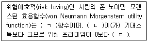
- ㄱ: 오목, ㄴ: 기대효용, ㄷ: 크다
- ㄱ: 볼록, ㄴ: 기대효용, ㄷ: 작다
- ㄱ: 오목, ㄴ: 기대효용, ㄷ: 작다
- ㄱ: 오목, ㄴ: 확실성등가, ㄷ: 크다
- ㄱ: 볼록, ㄴ: 확실성등가, ㄷ: 작다
(정답률: 알수없음)
44. 효용극대화를 추구하는 소비자 甲의 효용함수는 U(x,y)=min(2x,y)이다. 甲의 수요에 관한 설명으로 옳지 않은 것은? (단, 甲은 X재와 Y재만 소비하고, x는 X재 소비량, y는 Y재 소비량이다.)
- 상대가격변화에 따른 대체효과는 0이다.
- X 재 수요의 소득탄력성은 1이다.
- 가격소비곡선은 수직선의 형태를 갖는다.
- 소득소비곡선은 원점에서 출발하는 직선의 형태를 갖는다.
- 甲의 효용함수는 1차 동차함수이다.
(정답률: 알수없음)
45. 두 생산요소 자본 K와 노동 L을 투입하는 A기업의 생산함수가 Q=(min{L,3K})0.5로 주어져 있다. 산출물의 가격은 p, 노동의 가격은 ω=4, 자본의 가격은 r=6인 경우, 이윤을 극대화하는 A기업의 공급(QS)곡선은? (단, 생산물시장과 생산요소시장은 완전경쟁적이다.)
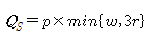
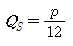
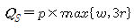
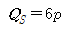
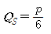
(정답률: 알수없음)
46. 세 사람 A, B, C로 이루어진 어떤 경제에서 공공재에 대한 세 사람의 수요함수(QA, QB, QC)는 각각 QA=10-PA,
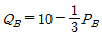
,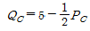
이고, 공공재의 한계비용은 20으로 일정할 때, 사회적 후생을 극대화시키는 공공재 생산량은? (단, PA, PB, PC는 A, B, C가 공공재에 지불하는 가격이다.)- 5
- 10
- 15
- 20
- 25
(정답률: 알수없음)
47. A재의 시장수요곡선은 QD=200-P이고, 시장공급곡선은 QS=P이다. 이 수요곡선과 공급곡선이 일치하는 균형상태에서 정부가 단위당 100의 물품세를 부과할 때 정부의 조세수입 중 소비자가 부담하는 조세의 크기는? (단, QD는 수요량, QS는 공급량, P는 가격이다.)
- 0
- 2,500
- 5,000
- 7,500
- 9,000
(정답률: 알수없음)
48. 현재 소비자 甲은 주어진 소득을 모두 사용하여 가격이 1,000원인 A재 10단위와 500원인 B재 15단위의 조합을 소비하려고 한다. 이때의 한계대체율(
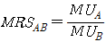
)이 1.5라면 효용극대화를 위한 甲의 선택으로 옳은 것은? (단, 소비자 甲의 무차별곡선은 우하향하고 원점에 대하여 볼록하며, MUi는 i재의 한계효용이다.)- A재 10단위와 B재 15단위를 소비한다.
- A재와 B재 소비를 모두 증가시켜야 한다.
- A재와 B재 소비를 모두 감소시켜야 한다.
- A재 소비를 증가시키고, B재 소비를 감소시켜야 한다.
- A재 소비를 감소시키고, B재 소비를 증가시켜야 한다.
(정답률: 알수없음)
49. 다음에 대한 설명으로 옳지 않은 것은?
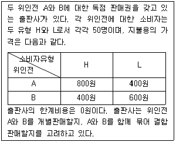
- 개별판매만 하는 경우 판매수입을 극대화하기 위한 가격은 A=800원, B=600원이다.
- A=400원, B=400원으로 가격을 책정하여 개별판매할 경우 소비자잉여가 발생한다.
- 결합판매만 하는 경우 두 권 묶음의 가격을 1,000원으로 책정할 때 판매수입이 극대화된다.
- 두 권 묶음의 가격을 1,000원으로 책정할 때 소비자잉여는 H 유형에만 발생한다.
- 결합판매의 최대 판매수입은 개별판매의 최대 판매수입보다 더 많다.
(정답률: 알수없음)
50. A기업의 생산함수는
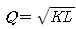
, 자본(K)의 가격은 r, 노동(L)의 가격은 ω이다. 생산량이 Q0로 주어졌을 때, 비용이 극소화되도록 자본과 노동의 투입량을 결정하고자 한다. 이에 관한 설명으로 옳지 않은 것은? (단, Q0>0이다.)- 생산함수는 자본과 노동에 대해 1차 동차함수이다.
- 최적 상태에서 노동 1단위당 자본 투입량은
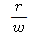
이다. - 최적 상태에서 요소간의 대체탄력성은 1이다.
- 최적 상태에서 노동과 자본의 투입량은 ω, r, Q0의 함수이다.
- 최적 상태에서 총비용 중 노동비용이 차지하는 비중은 일정하다.
(정답률: 알수없음)
51. A기업이 직면하고 있는 수요곡선은 QD=400-P이다. A기업이 가격을 100으로 책정할 때 한계수입은? (단, QD는 수요량, P는 가격이다.)
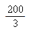
- 100
- 300
- -200
- 30,000
(정답률: 알수없음)
52. 독점시장에 관한 설명으로 옳지 않은 것은? [단, 수요곡선은 우하향하고 생산량은 양(+)이다.]
- 독점기업은 시장지배력을 이용하여 가격을 인상하면서 판매량을 늘릴 수 있다.
- 수요의 가격탄력성이 1일 때 독점기업의 한계수입은 0이다.
- 생산량이 증가함에 따라 평균비용곡선이 지속적으로 우하향하는 산업에서는 자연독점이 발생한다.
- 독점기업의 한계수입곡선은 수요곡선보다 아래에 위치한다.
- 독점기업의 이윤극대화 가격은 한계비용보다 높다.
(정답률: 알수없음)
53. 소비자 이론에 관한 설명으로 옳은 것은?
- 우하향하는 직선의 수요곡선상에서 수요량이 증가할수록 가격탄력성은 감소한다.
- 효용함수 U=X+Y는 0차 동차 함수이다.
- 효용함수 U=min(X,Y)에서 X재 가격이 상승할 때 X재 수요량이 감소하는 것은 대체효과 때문이다.
- 소비자가 기펜재와 정상재에 모든 소득을 지출하고 있는 상태에서 기펜재의 가격이 상승하면 정상재에 대한 수요는 증가한다.
- 효용함수 U=X+2Y이고, 두 재화의 가격이 동일하다면, 소비자는 효용 극대화를 위해 X재만을 소비한다.
(정답률: 알수없음)
54. 독점기업이 8,000개의 상품을 판매하고 있다. 이때 상품가격은 1만 원, 평균총비용은 1만 2,000원, 평균가변비용은 8,000원이며, 한계비용과 한계수입은 6,000원으로 같다. 현재의 단기적인 상황에 관한 설명으로 옳은 것은?
- 총수입은 9,600만 원이다.
- 총비용은 8,000만 원이다.
- 상품 단위당 4,000원의 손실을 보고 있다.
- 생산을 중단하면 3,200만 원의 손실이 발생한다.
- 생산을 중단하는 것이 손실을 최소화한다.
(정답률: 알수없음)
55. 정상재 A에 대한 수요의 가격탄력성이 1보다 클 때, 이 재화에 대한 소비자의 지출액이 감소하는 원인으로 적절한 것은?
- 보완재의 가격 하락
- 소비자의 소득 증가
- 대체재의 가격 상승
- A재화의 가격 상승
- A재화에 대한 선호 증가
(정답률: 알수없음)
56. 생수 시장을 양분하고 있는 백두산수와 한라산수의 광고여부에 따른 보수행렬은 아래와 같다. 다음 중 옳은 것을 모두 고른 것은? (단, 각 보수쌍에서 왼쪽은 백두산수의 보수이고, 오른쪽은 한라산수의 보수이다.)
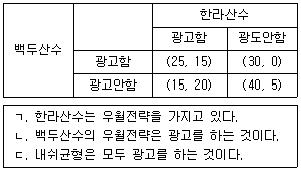
- ㄱ
- ㄴ
- ㄱ, ㄷ
- ㄴ, ㄷ
- ㄱ, ㄴ, ㄷ
(정답률: 알수없음)
57. 평균총비용곡선이 U자형인 A기업의 단기 비용곡선에 관한 설명으로 옳은 것은?（단, 생산요소가격은 불변이며, 고정생산요소가 존재한다.)
- 한계비용이 평균총비용보다 클 때, 생산량이 증가함에 따라 평균총비용은 증가한다.
- 한계비용이 평균총비용보다 클 때, 생산량이 증가함에 따라 평균고정비용은 증가한다.
- 평균총비용곡선과 평균가변비용곡선은 동일한 생산량 수준에서 최저점에 도달한다.
- 어떤 생산량의 한계비용은 원점에서 그 생산량에 해당하는 가변비용곡선상의 점을 이은 직선의 기울기이다.
- 어떤 생산량의 평균총비용은 그 생산량에 해당하는 총비용곡선상의 점에서 그은 접선의 기울기이다.
(정답률: 알수없음)
58. 두 재화 X와 Y를 소비하고 있는 甲의 효용함수는 U(x,y)=min{4x+y,x+7y}이다. 수평축을 X의 소비량(x), 수직축을 Y의 소비량(y)이라고 할 때, 甲이 X재화 ４단위, Y재화 ７단위를 소비하는 점에서 무차별곡선의 기울기는?
- -4
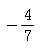
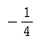
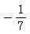
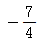
(정답률: 알수없음)
59. 소규모개방경제에서 수입 소비재 A에 관세를 부과할 때 이 시장에 나타날 경제적 효과에 관한 설명으로 옳은 것은? (단, 국내 수요곡선은 우하향, 국내 공급곡선은 우상향하며, A의 국제가격은 교역 이전의 국내가격보다 낮다.)
- 국내 소비자의 잉여는 증가한다.
- 국내 생산자의 잉여는 감소한다.
- 국내 소비는 감소한다.
- 국내 생산자의 생산량은 감소한다.
- 국내의 사회적 총잉여는 증가한다.
(정답률: 알수없음)
60. 외부효과가 존재하는 A시장의 수요곡선은 P=100-Q이고, 사적한계비용은 PMC=40+0.5Q이다. 생산량 한 단위당 30의 추가적인 사회적 비용이 발생하는 경우에 관한 설명으로 옳은 것은? (단, P는 가격, Q는 수량이다.)
- 정부개입이 없는 경우 균형생산량은 20이다.
- 사회적 후생을 극대화하는 생산량은 40이다.
- 보조금을 지급하여 사회적 후생을 높일 수 있다.
- 생산량 수준을 40으로 규제함으로써 사회적 후생을 높일 수 있다.
- 생산량 수준을 20으로 규제하든 단위당 30의 조세를 부과하든 사회적 후생의 크기는 동일하다.
(정답률: 알수없음)
61. 현금/요구불예금 비율이 0.8, 법정지급준비율이 5%, 초과지급준비율이 5%일 때, 본원통화가 8,000억 원이면 최대 가능한 M1 통화량은?
- 8,000억 원
- 1조 원
- 1조 2,000억 원
- 1조 4,000억 원
- 1조 6,000억 원
(정답률: 알수없음)
62. 실질이자율이 4%, 기대인플레이션율이 8%일 때, 명목이자소득에 대해 25%의 세금이 부과되는 경우 세후 명목이자율과 세후 기대실질이자율은 각각 얼마인가? (단, 피셔효과가 성립한다.)
- 8%, 9%
- 8%, 25%
- 9%, 1%
- 9%, 4%
- 9%, 8%
(정답률: 알수없음)
63. 폐쇄경제의 IS-LM모형에서 지급준비율과 현금/예금 보유비율이 이자율의 감소함수일 때, 두 비율이 상수인 경우와 비교하여 옳은 설명을 모두 고른 것은? (단, IS곡선은 우하향, LM곡선은 우상향한다.)
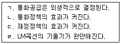
- ㄱ, ㄴ
- ㄴ, ㄷ
- ㄷ, ㄹ
- ㄱ, ㄴ, ㄹ
- ㄱ, ㄷ, ㄹ
(정답률: 알수없음)
64. 사과와 바나나만 생산하는 A국의 생산량과 가격이 다음과 같을 때 2012년의 전년대비 실질GDP 성장률과 GDP디플레이터 상승률로 계산한 물가상승률은 각각 얼마인가? (단, 2011년을 기준연도로 한다.)
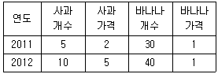
- 33%, 33%
- 33%, 25%
- 50%, 25%
- 50%, 50%
- 50%, 75%
(정답률: 알수없음)
65. 필립스곡선에 관한 설명으로 옳은 것을 모두 고른 것은?
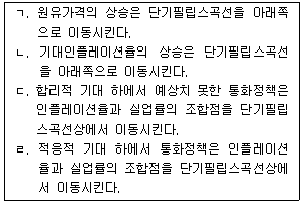
- ㄱ, ㄴ
- ㄱ, ㄷ
- ㄴ, ㄷ
- ㄴ, ㄹ
- ㄷ, ㄹ
(정답률: 알수없음)
66. 모든 시장이 완전경쟁적인 B국의 총생산량이 Y=AL1-θKθ으로 결정될 때, 다음 설명 중 옳지 않은 것은? (단, Y는 총생산량, A는 총요소생산성, L은 노동투입량, K는 자본투입량, 0<θ<1이다.)
- 노동소득분배율은 1-θ이다.
- 자본소득분배율은 θ이다.
- 총생산함수는 규모에 대한 수익불변이다.
- 총요소생산성이 증가하면, 노동소득분배율 대비 자본소득분배율의 상대적 비율이 증가한다.
- 생산요소가 증가하지 않을 경우, 총생산량의 증가율은 총요소생산성 증가율에 의해서 결정된다.
(정답률: 알수없음)
67. 유동성 함정에 관한 설명으로 옳지 않은 것은?
- 화폐수요의 이자율 탄력성이 무한대인 경우에 발생한다.
- 채권의 가격이 매우 높아서 추가적인 통화공급이 투기적 화폐수요로 모두 흡수된다.
- 이자율이 매우 낮아 향후 이자율이 상승할 것으로 예상될 경우 유동성 함정이 발생할 수 있다.
- 확장적 통화정책은 이자율을 하락시키지 못하여 총수요 확대효과가 없다.
- 확장적 재정정책은 이자율을 상승시켜 총수요 확대효과가 없다.
(정답률: 알수없음)
68. 재정적자가 증가한 경우 민간저축에 변화가 없었다면 ( )에 들어갈 내용을 순서대로 옳게 연결한 것은?
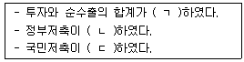
- ㄱ: 감소, ㄴ: 감소, ㄷ: 감소
- ㄱ: 감소, ㄴ: 감소, ㄷ: 증가
- ㄱ: 증가, ㄴ: 증가, ㄷ: 감소
- ㄱ: 증가, ㄴ: 감소, ㄷ: 감소
- ㄱ: 증가, ㄴ: 증가, ㄷ: 증가
(정답률: 알수없음)
69. 국가간 자본이동이 완전히 자유롭고 변동환율제를 채택하고 있는 소규모개방경제에서 확장적인 통화정책을 시행하였다. 국내 물가 및 외국 물가가 고정되어 있는 단기에서의 경제적 효과로 옳은 것을 모두 고른 것은?
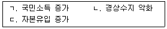
- ㄱ
- ㄴ
- ㄱ, ㄷ
- ㄴ, ㄷ
- ㄱ, ㄴ, ㄷ
(정답률: 알수없음)
70. 구매력평가설이 성립할 때, 다음 설명 중 옳지 않은 것은?
- 자국의 통화량이 증가할 때 실질환율은 변화하지 않는다.
- 외국의 양적완화 정책으로 외국의 물가가 상승하면, 자국의 실질 순수출이 증가한다.
- 양국 물가상승률의 차이가 명목환율의 변화율에 영향을 준다.
- 양국간 무역에서 재정거래(arbitrage)에 의한 수익을 얻을 수 없다.
- 양국 물가수준의 상대적 비율이 명목환율에 영향을 준다.
(정답률: 알수없음)
71. 폐쇄경제의 IS-LM모형에 관한 설명으로 옳지 않은 것은?
- 확장적 재정정책은 IS곡선을 우측으로 이동시킨다.
- 우하향하는 IS곡선의 왼쪽에서는 생산물시장에서 초과수요가 발생한다.
- 투자가 이자율에 영향을 받지 않는다면 IS곡선은 수평선이다.
- 화폐수요가 소득에 영향을 받지 않는다면 LM곡선은 수평선이다.
- 중앙은행이 공개시장에서 채권을 매입할 경우 LM곡선은 우측으로 이동한다.
(정답률: 알수없음)
72. 다음과 같은 폐쇄경제모형에서 생산물시장의 균형을 나타내는 IS곡선은? (단, Y는 국민소득, C는 소비, T는 조세, I는 투자, r은 실질 이자율, G는 정부지출이다.)
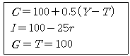
- r=8-0.016Y
- r=10-0.02Y
- r=10-0.03Y
- r=12-0.04Y
- r=12-0.⑤Y
(정답률: 알수없음)
73. A국의 총생산함수는
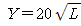
, 노동공급함수는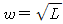
라고 할 때, 노동시장에서의 균형노동량(L*)은? (단, Y는 총생산, ω는 실질임금, L은 노동량이며, 상품시장과 노동시장은 완전경쟁시장이다.)- L*=5
- L*=10
- L*=15
- L*=20
- L*=25
(정답률: 알수없음)
74. A국의 실업자 수가 200만 명, 취업자 수가 3,800만 명, 경제활동참가율이 80%일 때 고용률은? [단, 고용률은 (취업자/생산가능인구)×100(%)이다.]
- 50%
- 65%
- 72%
- 76%
- 78%
(정답률: 알수없음)
75. B국의 생산함수는 Y=AK1/3L2/3이다. 성장회계에 따른 2013년 총요소생산성의 전년대비 증가율은? (단, Y는 총생산, A는 총요소생산성, K는 자본량, L은 노동량이다.)
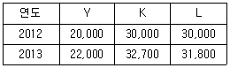
- 2%
- 3%
- 5%
- 8%
- 10%
(정답률: 알수없음)
76. 전년도에 비해 올해 통화량은 5%, 물가는 6%, 실질국민소득은 9% 증가하였고, 전년도 화폐유통속도가 20이었다면, 올해의 화폐유통속도는? (단, 화폐수량설이 성립한다.)
- 18
- 19
- 20
- 22
- 24
(정답률: 알수없음)
77. 본원통화를 증가시키는 경우를 모두 고른 것은?
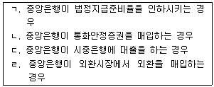
- ㄱ, ㄴ
- ㄴ, ㄹ
- ㄱ, ㄴ, ㄷ
- ㄱ, ㄷ, ㄹ
- ㄴ, ㄷ, ㄹ
(정답률: 알수없음)
78. 甲은 乙에게 100만 원을 위탁하고, 乙은 자금을 운용하여 이익이 발생할 때에는 이익의 10%를 운용수수료로 받고 손실이 발생할 때에는 운용수수료를 받지 않는 계약을 맺었다. 甲은 자금운용을 전적으로 乙에게 위임하며 乙은 자신의 이익만을 추구한다. 상황에 따른 각 투자안별 수익(원금 포함)이 다음과 같을 때 乙의 투자선택과 기대운용수수료는? (단, 甲과 乙은 위험중립적이다.)
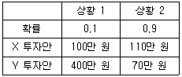
- X 투자안을 선택하며, 기대운용수수료는 3만 원이다.
- X 투자안을 선택하며, 기대운용수수료는 6만 원이다.
- X 투자안을 선택하며, 기대운용수수료는 9만 원이다.
- Y 투자안을 선택하며, 기대운용수수료는 3만 원이다.
- Y 투자안을 선택하며, 기대운용수수료는 6만 원이다.
(정답률: 알수없음)
79. 중앙은행은 확장적 통화정책을 실시하여 균형국민소득을 60만큼 더 증가시키고자 한다. 경제모형이 다음과 같을 때 중앙은행은 통화량을 현재의 수준에서 얼마만큼 더 증가시켜야 하는가? (단, Y는 국민소득, C는 소비, I는 투자, G는 정부지출, r은 이자율, Md는 화폐수요, MS는 화폐공급이며, 물가수준은 고정되어 있다.)
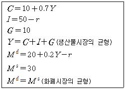
- 10
- 20
- 30
- 40
- 50
(정답률: 알수없음)
80. 다음 모형에 기초하여 분석할 때, 물가수준-국민소득 평면에서 총수요곡선이 우하향하는 이유를 가장 적절하게 설명한 것은? (단, Y는 소득, C는 소비, I는 투자, r은 실질 이자율, T는 조세, G는 정부지출, P는 물가수준, πe는 예상물가상승률, βi,i=0,…,5,는 양의 계수, Md는 명목 화폐수요, MS는 명목 화폐공급이며
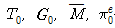
은 상수이다.)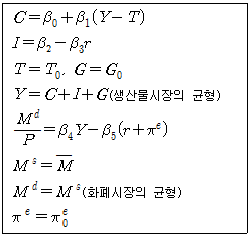
- 물가수준이 하락하면 실질 자산의 가치가 증가하여 소비지출이 증가한다.
- 물가수준이 하락하면 실질 화폐공급의 증가로 이자율이 하락하여 투자가 증가한다.
- 물가수준이 하락하면 해외로 자본유출이 증가하여 순수출이 증가한다.
- 물가수준의 변화와 무관하게 구축효과로 인해 총수요가 감소한다.
- 물가수준의 변화와 무관하게 피구효과로 인해 총수요가 감소한다.
(정답률: 알수없음)